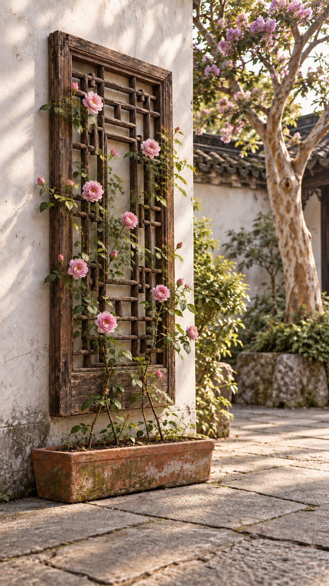
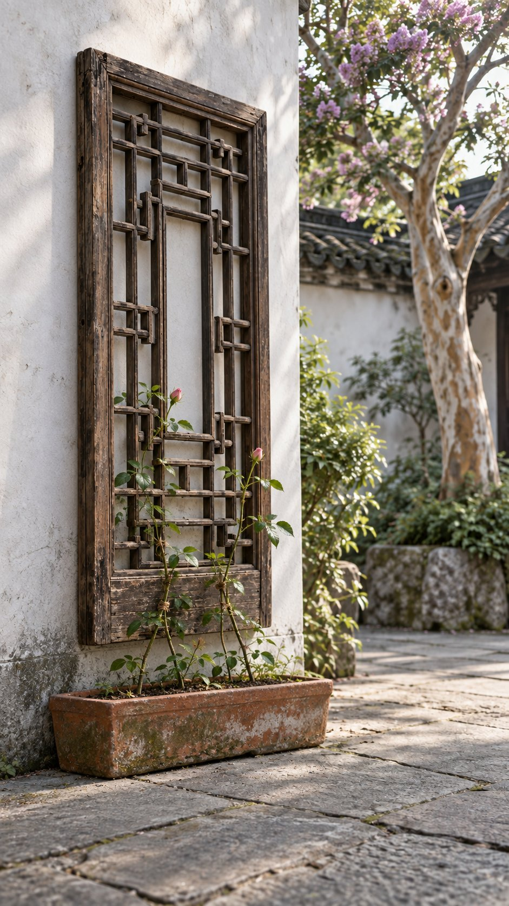
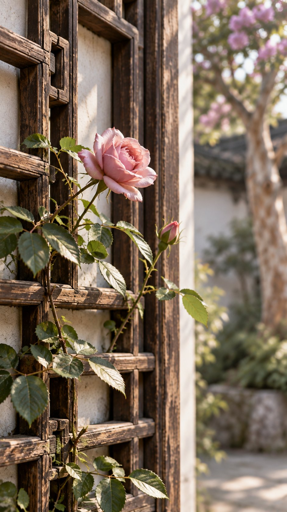

从墙角开始
被遗忘的旧木窗
斑驳的木纹、积灰的窗格和角落里的蛛网，都留着时间经过的痕迹。它不必恢复成崭新的样子，那些旧痕本来就是它的一部分。
庭院生活 · 小院旧物新生计划 ②
被扔在墙角的旧木窗，重新挂回墙上以后，等到了它的第二次花开。

01 / 04
它只是被放在墙角太久，久到我们忘了，它原来也曾是生活的一部分。这扇旧木窗没有被丢掉，我把它重新放回白墙，让木格成为枝条可以攀附的方向。
斑驳的木纹、积灰的窗格和角落里的蛛网，都留着时间经过的痕迹。它不必恢复成崭新的样子，那些旧痕本来就是它的一部分。

窗框重新固定，下面放上一只长花箱。最初的藤枝还很细，只够轻轻搭上几格木条，但这个角落已经有了新的期待。

不是轰轰烈烈的改变，只是一朵粉色月季，在清晨的光里靠着旧窗开放。那一刻才发现，等待本身也是改造的一部分。
月季沿着窗格向上生长，旧木窗也不再只是装饰。它承托枝叶、框住光影，和院子一起继续经历新的季节。
THE SHORT FILM
从被遗忘的墙角，到重新上墙、抽出新藤，再到第一朵花开放。短片没有刻意加快时间，只保留庭院里真实而缓慢的变化。
旧物新生计划 · TO BE CONTINUED
我会继续记录院子里的旧物、植物和四季，也记录它们如何在时间里慢慢变成新的风景。
查看更多作品